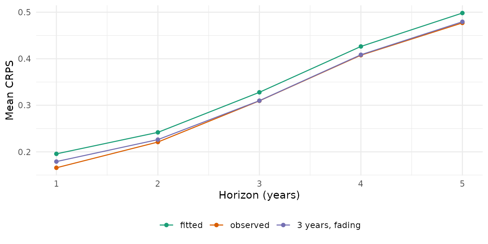

A forecast continues from some level in the last observed year, the jump-off. Most models start from their own fitted rates of that year, which differ from the observed rates: a model with few parameters does not reproduce every age, year and stratum. The difference shows up as a step between the last observed and the first forecast year. This vignette shows when the step is large, the ways of placing the start, and what they change.
library(mortensor)
library(data.table)
x <- mt_data(deaths = ons_data, population = ons_data, by = c("sex", "imd_decile"), age = "age_group",
value = c(deaths = "all_causes", population = "population"))
x <- mt_as_exposure(x, type = "midyear")
x <- mt_group_levels(x, "imd_decile", function(d) paste0("Q", ceiling(as.numeric(d) / 2)), name = "quintile")When the step is large
The step is the distance between the model’s fitted rates and the
observed rates in the last year. Lee-Carter fitted to each stratum
separately has an age pattern and a period index of its own for every
stratum and follows each year closely. Li-Lee pools the quintiles of
each sex: they share one trend and deviate from it by a stationary
factor, so the fit of a single quintile in a single year is looser.
mt_jump_off() reports life expectancy at birth in the last
observed year (2019), as fitted, and in the first forecast year:
fc_lc <- mt_forecast(mt_fit(lee_carter(), x), h = 10, n_draws = 500, seed = 1)
fc_ll <- mt_forecast(mt_fit(li_lee(common_by = "sex"), x), h = 10, n_draws = 500, seed = 1)
merge(mt_jump_off(fc_lc)[, .(label, observed, lee_carter_fitted = fitted)],
mt_jump_off(fc_ll)[, .(label, li_lee_fitted = fitted, li_lee_2020 = forecast)], by = "label")[
, lapply(.SD, function(v) if (is.numeric(v)) round(v, 2) else v)]
#> Key: <label>
#> label observed lee_carter_fitted li_lee_fitted li_lee_2020
#> <char> <num> <num> <num> <num>
#> 1: female.Q1 79.83 79.85 80.26 80.92
#> 2: female.Q2 82.50 82.51 82.74 82.90
#> 3: female.Q3 83.93 83.97 84.01 84.17
#> 4: female.Q4 85.02 85.05 84.88 85.05
#> 5: female.Q5 86.30 86.29 85.95 86.02
#> 6: male.Q1 75.43 75.48 75.84 76.10
#> 7: male.Q2 78.60 78.60 78.74 78.96
#> 8: male.Q3 80.61 80.66 80.56 80.78
#> 9: male.Q4 81.82 81.84 81.75 81.96
#> 10: male.Q5 83.09 83.15 83.02 83.20Lee-Carter reproduces the observed life expectancy of 2019 to a few hundredths of a year. Li-Lee puts women in Q1 0.4 years above the observed value and women in Q5 0.3 years below it: it pulls the quintiles towards their common trend. For women in Q1 its first forecast year then adds another 0.7 years. The step carries into every forecast year.
Starting points
- fitted (default): the forecast continues from the model’s fitted rates of the last year;
-
observed: it continues from the observed rates of
the last year, with all their noise. Lee and Miller (2001) proposed this
jump-off for Lee-Carter: the log ratio of observed to fitted rates of
the last year is added to the log rates of every forecast year.
anchored()applies it to any model;lee_carter(jump_off = "observed")andli_lee(jump_off = "observed")give the same forecasts.
anchored() has further options, which are specific to
this package (reference unknown): years averages the
offsets over the last years, shrink = TRUE shrinks the
offsets of cells with few deaths towards the mean of their stratum, and
decay lets the offsets fade out over that many years, so
that the forecast returns to the model’s trend. The comparison includes
one such setting:
fc <- list(fitted = fc_ll,
observed = mt_forecast(mt_fit(anchored(li_lee(common_by = "sex")), x), h = 10, n_draws = 500, seed = 1),
"3 years, fading" = mt_forecast(mt_fit(anchored(li_lee(common_by = "sex"), years = 3, decay = 10,
shrink = TRUE), x), h = 10, n_draws = 500, seed = 1))
mt_plot_compare(fc, strata = c("female.Q1", "female.Q5"), periods = c(2010, 2029), data = x)
The solid line is the fitted Li-Lee model, the points the observed life expectancy. The fitted forecast continues from the solid line, above the last points for women in Q1. The other two forecasts start at the observed level. By age, the observed start also carries the noise of single cells, which the package-specific setting averages over three years:
mt_plot_compare(fc, quantity = "rate", ages = c("45-49", "65-69", "85-89"), strata = c("female.Q1", "female.Q5"),
periods = c(2010, 2025))
Which start forecasts better
A backtest fits each version to the years up to an origin and scores the following five years:
ll <- li_lee(common_by = "sex")
bt <- mt_compare(list(fitted = ll, observed = anchored(ll),
"3 years, fading" = anchored(ll, years = 3, decay = 10, shrink = TRUE)),
x, origins = 2008:2014, h = 5, n_draws = 200, quantities = "life_expectancy")
#> Warning in report_fit_problems(diagnostics, spec$label, classes): Li-Lee
#> (common by sex): Li-Lee: the AR(1) coefficient of the stratum index is bounded
#> at |phi| = 0.99 in 1 stratum/strata (female.Q4): their deviations from the
#> common trend are close to a unit root and revert very slowly; coherence may not
#> suit them. (diagnostics of 10 stratum/strata of the fit).
#> Warning in report_fit_problems(diagnostics, spec$label, classes): Li-Lee
#> (common by sex): Li-Lee: the AR(1) coefficient of the stratum index is bounded
#> at |phi| = 0.99 in 1 stratum/strata (female.Q4): their deviations from the
#> common trend are close to a unit root and revert very slowly; coherence may not
#> suit them. (diagnostics of 10 stratum/strata of the fit).
#> Warning in report_fit_problems(diagnostics, spec$label, classes): Li-Lee
#> (common by sex): Li-Lee: the AR(1) coefficient of the stratum index is bounded
#> at |phi| = 0.99 in 1 stratum/strata (female.Q4): their deviations from the
#> common trend are close to a unit root and revert very slowly; coherence may not
#> suit them. (diagnostics of 10 stratum/strata of the fit).
#> Warning in report_fit_problems(diagnostics, spec$label, classes): Li-Lee
#> (common by sex): Li-Lee: the AR(1) coefficient of the stratum index is bounded
#> at |phi| = 0.99 in 1 stratum/strata (female.Q4): their deviations from the
#> common trend are close to a unit root and revert very slowly; coherence may not
#> suit them. (diagnostics of 10 stratum/strata of the fit).
#> Warning in report_fit_problems(diagnostics, spec$label, classes): Li-Lee
#> (common by sex): Li-Lee: the AR(1) coefficient of the stratum index is bounded
#> at |phi| = 0.99 in 1 stratum/strata (female.Q4): their deviations from the
#> common trend are close to a unit root and revert very slowly; coherence may not
#> suit them. (diagnostics of 10 stratum/strata of the fit).
#> Warning in report_fit_problems(diagnostics, spec$label, classes): Li-Lee
#> (common by sex): Li-Lee: the AR(1) coefficient of the stratum index is bounded
#> at |phi| = 0.99 in 1 stratum/strata (female.Q4): their deviations from the
#> common trend are close to a unit root and revert very slowly; coherence may not
#> suit them. (diagnostics of 10 stratum/strata of the fit).
mt_score_table(bt, metrics = c("crps", "cov95"))
#> model crps cov95 crps_le cov95_le
#> <fctr> <num> <num> <num> <num>
#> 1: fitted 0.0671 0.810 0.338 0.806
#> 2: observed 0.0714 0.808 0.316 0.834
#> 3: 3 years, fading 0.0661 0.824 0.321 0.831
mt_plot_scores(bt, target = "life_expectancy")
crps scores the log death rates, crps_le
life expectancy at birth in years (lower is better; see “Backtesting and
scores”). The observed start forecasts life expectancy more accurately
than the fitted start (CRPS 0.316 against 0.338 years), because the step
of Li-Lee at the jump-off is large here. It forecasts the rates less
accurately (0.071 against 0.067), because it carries the noise of single
ages and years into every forecast year. The package-specific setting,
which averages the offsets over three years, shrinks them and lets them
fade out, gives the lowest CRPS of the rates (0.066) and a CRPS of life
expectancy close to that of the observed start (0.321 years). The 95%
intervals of all three cover 0.81 to 0.82 of the observed rates.
For Lee-Carter fitted to each stratum, whose step is small here:
bt_lc <- mt_compare(list(fitted = lee_carter(), observed = anchored(lee_carter())), x, origins = 2008:2014, h = 5,
n_draws = 200, quantities = "life_expectancy")
mt_score_table(bt_lc, metrics = c("crps", "cov95"))
#> model crps cov95 crps_le cov95_le
#> <fctr> <num> <num> <num> <num>
#> 1: fitted 0.0683 0.793 0.293 0.814
#> 2: observed 0.0789 0.760 0.310 0.789Lee-Carter reproduces the last observed year closely, so the observed start adds mainly the noise of that year: it forecasts the rates and life expectancy less accurately than the fitted start (CRPS 0.079 against 0.068, and 0.310 against 0.293 years).
Summary
| Start | How | When |
|---|---|---|
| fitted | default of every model | the model fits the last year closely (here Lee-Carter) |
| observed (Lee and Miller 2001) |
anchored(model) around any model;
jump_off = "observed" of lee_carter() and
li_lee()
|
the fit misses the level of the last year (here Li-Lee) |
| package-specific | anchored(model, years = 3, decay = 10, shrink = TRUE) |
noisy last years; check in a backtest |
mt_jump_off() shows the step of any forecast; a backtest
shows whether another start forecasts better on the data at hand.